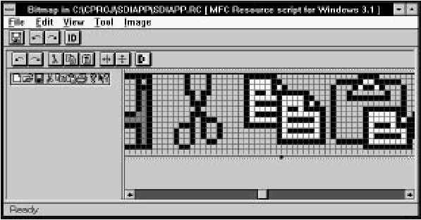
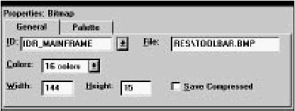
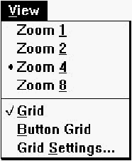

Home
| Search
| CTG
| RTL
| IDDE
| STL
Home
| Search
| CTG
| RTL
| IDDE
| STL
Last update Fri Apr 28 16:30:17 2006
|
Reference 1. Introducing Digital Mars C++ 2. Introducing the IDDE Part 2: Creating an Application with Digital Mars C++ 3. Starting a Project and Defining Workspaces 4. Generating an Application Framework 5. Defining Classes and Their Hierarchies 6. Editing Program Code 7. Adding Look and Feel with Resources 8. Testing an Application Part 3: Learning Digital Mars C++ by Example 9. Introduction to the Tutorial 10. Lesson 1: Create the DOS Application 11. Lesson 2: Generate an Application Framework 12. Lesson 3: Customize the Interface 13. Lesson 4: Add Messages with ClassExpress 14. Lesson 5: Add a Dialog Box with ClassExpress Part 4: More about Creating Programs 15. More about Projects and Workspaces 16. More about Project Build Settings 17. More about AppExpress 18. More about ClassExpress 19. Class Editor Reference 20. Hierarchy Editor Reference 21. Text Editor Reference 22. Using Version Control Part 5: More about Testing Programs 23. Controlling and Configuring the Debugger 24. Commands Available in Debugging Mode Part 6: About Managing Resources 25. ResourceStudio Resource Editor 26. Dialog Editor 27. Menu, Accelerator and String Table Editors 28. Bitmap, Cursor, Icon, and Font Editors 29. Version Information and Custom Resource Editors Part 7: Appendixes A. Expression Evaluation B. IDDE Settings and Command-Line Options C. Using NetBuild |
28. Bitmap, Cursor, Icon, and Font EditorsThis ResourceStudio reference chapter contains details about the commands and options found in the Bitmap editor, the Cursor editor, the Icon editor, and the Font editor. For an introduction to ResourceStudio, see Chapter 7, "Adding Look and Feel with Resources."This chapter shows the editors running in standalone windows. If you edit a binary resource directly (that is, if you open or create it by choosing Open from the Shell window's File menu), the File menu you will see will not match those shown below, and the ID and File fields in the Property sheet will be disabled. Bitmap EditorThe Bitmap editor (see Figure 28-1) is used to edit bitmaps. [Figure 28-1 The Bitmap editor The Bitmap editor displays two views of the bitmap. Each view can be independently zoomed; you may wish to keep one view at normal size for reference, and one at a higher magnification for easier drawing. You can draw in either view, though. Drawing tools are selected by choosing commands in the Tool menu, or by clicking on the tool in the toolbox. Colors are selected in the palette section of the toolbox. The View menu is used to zoom the views and to turn on the grid. Simple image manipulation functions are available in the Image menu. For more information about using the Bitmap editor, see Chapter 7, "Adding Look and Feel with Resources." BitmapExpressAs a new bitmap is created, the BitmapExpress dialog box opens (see Figure 28-2). This dialog box is used to set initial bitmap properties.
[Figure 28-2 BitmapExpress Select bitmap typeSpecifies the number of colors in the bitmap (2, 16, or 256).Initial sizeSpecifies the bitmap width and height.Toolbar bitmapSelect this option if the bitmap will be used as the toolbar in an MFC application. If this option is selected, the number of colors is set to 16 and the initial size is determined by the value of the Buttons across option.Buttons acrossSpecifies the number of buttons for toolbar bitmaps. The bitmap's initial size is changed to accommodate the number of buttons you request. Each button is 15 pixels high and 16 pixels across.File menu commandsThe File menu (see Figure 28-3) contains commands to save the resource file, to edit resource IDs, and to perform other miscellaneous functions.
[Figure 28-3 Bitmap editor File menu
Edit menu commandsThe Edit menu (see Figure 28-4) contains standard editing commands. You can undo operations, and can cut, copy, paste, and clear rectangular regions of the bitmap. To select a region to cut, copy, or clear, select the Selection tool from the toolbox or from the Tool menu, then drag a box around the region.
[Figure 28-4 Bitmap editor Edit menu
View menu commandsThe View menu (see Figure 28-5) contains commands to set view magnification and to set grid options.
[Figure 28-5 Bitmap editor View menu
Tool menu commandsThe Tool menu (see Figure 28-7) lets you select drawing tools. While over the drawing area, the cursor changes shape to indicate the currently selected tool. To draw, click or click and drag (as appropriate) in the drawing area. Using the right button rather than the left reverses the roles of foreground and background colors. Drawing tools can also be selected in the toolbox. For more information about drawing operations in the Bitmap editor, see Chapter 7, "Adding Look and Feel with Resources."
[Figure 28-7 Bitmap editor Tool menu
Image menu commandsCommands in the Image menu (see Figure 28-8) perform simple image manipulation functions. To select a region to flip or invert, select the Selection tool from the toolbox or from the Tool menu, then drag a box around the region. If no region is selected, these commands operate on the entire bitmap.
[Figure 28-8 Bitmap editor Image menu
Toolbar commandsThe Bitmap editor toolbar (see Figure 28-9) provides quick access to frequently used menu commands.
[Figure 28-9 Bitmap editor toolbar
ToolboxThe Bitmap editor toolbox (see Figure 28-10) provides quick access to the tools available in the Tool menu. The toolbox also lets you select foreground and background colors, brush types, background pattern, and line type.For more information on the Bitmap editor toolbox, see Chapter 7, "Adding Look and Feel with Resources."
[Figure 28-10 Bitmap editor toolbox Bitmap propertiesBitmaps have two pages of properties. The General properties are shown in Figure 28-11. [Figure 28-11 Bitmap General properties Specify a filename for the bitmap in the File textbox. The Width and Height of the bitmap can be changed here, or the bitmap can be resized in the main display by dragging one of the handles along the bitmap edge. Palette properties of a bitmap are shown in Figure 28-12.
[Figure 28-12 Bitmap Palette properties Foreground and background drawing colors can be set by respectively clicking and right-clicking colors in this display. Double-clicking a color opens the Custom Color dialog box, which can be used to change the color's red, green, and blue components. Cursor EditorThe Cursor editor (see Figure 28-13) is used to edit cursors.
[Figure 28-13 The Cursor editor Since cursors are much like bitmaps, the Cursor editor behaves much like the Bitmap editor (see "Bitmap Editor," earlier in this chapter). The distinguishing characteristics of cursors are as follows:
Drawing tools are selected by choosing commands in the Tool menu, or by clicking on the tool in the toolbox. Colors are selected in the palette section of the toolbox. The View menu is used to zoom the views and to turn on the grid. Simple image manipulation functions are available in the Image menu. The cursor hotspot is set by choosing Set Hotspot from the Image menu. File menu commandsThe File menu (see Figure 28-14) contains commands to save the resource file, to edit resource IDs, and to perform other miscellaneous functions.
[Figure 28-14 Cursor editor File menu
Edit menu commandsThe Edit menu (see Figure 28-15) contains standard editing commands. You can undo operations, and can cut, copy, paste, and clear rectangular regions of the cursor. To select a region to cut, copy, or clear, select the Selection tool from the toolbox or from the Tool menu, then drag a box around the region.
[Figure 28-15 Cursor editor Edit menu
View menu commandsThe View menu (see Figure 28-16) contains commands to set view magnification and to set grid options.
[Figure 28-16 Cursor editor View menu
Tool menu commandsThe Tool menu (see Figure 28-18) lets you select drawing tools. While over the drawing area, the cursor changes shape to indicate the currently selected tool. To draw, click or click and drag (as appropriate) in the drawing area. Using the right button rather than the left reverses the roles of foreground and background colors. Drawing tools can also be selected in the toolbox. Drawing operations are identical to those in the Bitmap editor.For more information, see Chapter 7, "Adding Look and Feel with Resources."
[Figure 28-18 Cursor editor Tool menu
Image menu commandsCommands in the Image menu (see Figure 28-19) perform simple image manipulation functions. To select a region to flip or invert, select the Selection tool from the toolbox or from the Tool menu, then drag a box around the region. If no region is selected, these commands operate on the entire cursor. This menu also contains a command to set the cursor hotspot.
[Figure 28-19 Cursor editor Image menu
Toolbar commandsThe Cursor editor toolbar (see Figure 28-20) provides quick access to frequently used menu commands.
[Figure 28-20 Cursor editor toolbar
ToolboxThe Cursor editor toolbox (see Figure 28-21) provides quick access to the tools available in the Tool menu. The toolbox also lets you select foreground and background colors, brush types, background pattern, and line type.
[Figure 28-21 Cursor editor toolbox The toolbox is slightly different from the toolbox used in the Bitmap editor. In addition to the usual color palette, two extra colors are available: Transparent and Inverted. Transparent is used to draw areas in the cursor where the background screen color shows through. Inverted is used to draw areas in the cursor where the background screen color is bitwise-complemented. Other than these two additions, the Cursor editor toolbox is identical to the Bitmap editor toolbox. For more information on the Bitmap editor toolbox, see Chapter 7, "Adding Look and Feel with Resources." Cursor propertiesCursor properties are shown in Figure 28-22.
[Figure 28-22 Cursor properties Specify a filename for the cursor resource in the File textbox. The cursor hotspot coordinates are displayed below the File textbox. The Image field specifies which of the cursors in the cursor resource is currently displayed. Click on New to create a new cursor in the current resource, or click on Delete to delete the current cursor from the resource. Note that you cannot delete the last cursor from the resource. Icon EditorThe Icon editor (see Figure 28-23) is used to edit icons.
[Figure 28-23 The Icon editor Since icons are much like bitmaps, the Icon editor behaves much like the Bitmap editor (see "Bitmap Editor," earlier in this chapter). The distinguishing characteristics of icons are as follows:
Drawing tools are selected by choosing commands in the Tool menu, or by clicking on the tool in the toolbox. Colors are selected in the palette section of the toolbox. The View menu is used to zoom the views and to turn on the grid. Simple image manipulation functions are available in the Image menu. File menu commandsThe File menu (see Figure 28-24) contains commands to save the resource file, to edit resource IDs, and to perform other miscellaneous functions.
[Figure 28-24 Icon editor File menu
Edit menu commandsThe Edit menu (see Figure 28-25) contains standard editing commands. You can undo operations, and can cut, copy, paste, and clear rectangular regions of the icon. To select a region to cut, copy, or clear, select the Selection tool from the toolbox or from the Tool menu, then drag a box around the region.
[Figure 28-25 Icon editor Edit menu
View menu commandsThe View menu (see Figure 28-26) contains commands to set view magnification and to set grid options.
[Figure 28-26 Cursor editor View menu
Tool menu commandsThe Tool menu (see Figure 28-28) lets you select drawing tools. While over the drawing area, the cursor changes shape to indicate the currently selected tool. To draw, click or click and drag (as appropriate) in the drawing area. Using the right button rather than the left reverses the roles of foreground and background colors. Drawing tools can also be selected in the toolbox. Drawing operations are identical to those in the Bitmap editor.For more information, see Chapter 7, "Adding Look and Feel with Resources."
[Figure 28-28 Icon editor Tool menu
Image menu commandsCommands in the Image menu (see Figure 28-29) perform simple image manipulation functions. To select a region to flip or invert, select the Selection tool from the toolbox or from the Tool menu, then drag a box around the region. If no region is selected, these commands operate on the entire icon.
[Figure 28-29 Icon editor Image menu
Toolbar commandsThe Icon editor toolbar (see Figure 28-30) provides quick access to frequently-used menu commands.
[Figure 28-30 Icon editor toolbar
ToolboxThe Icon editor toolbox (see Figure 28-31) provides quick access to the tools available in the Tool menu. The toolbox also lets you select foreground and background colors, brush types, background pattern, and line type.
[Figure 28-31 Icon editor toolbox The toolbox is slightly different from the toolbox used in the Bitmap editor. In addition to the usual color palette, two extra colors are available: Transparent and Inverted. Transparent is used to draw areas in the cursor where the background screen color shows through. Inverted is used to draw areas in the cursor where the background screen color is bitwise-complemented. Other than these two additions, the Icon editor toolbox is identical to the Bitmap editor toolbox. For more information on the Bitmap editor toolbox, see Chapter 7, "Adding Look and Feel with Resources." Icon propertiesIcon properties are shown in Figure 28-32.
[Figure 28-32 Icon properties Specify a filename for the icon resource in the File textbox. The Image field specifies which of the icons in the icon resource is currently displayed. Click on New to create a new icon in the current resource, or click on Delete to delete the current icon from the resource. Note that you cannot delete the last icon from the resource. Font EditorThe Font editor (see Figure 28-33) is used to edit font resources.
[Figure 28-33 The Font editor Unlike the Bitmap editor, the two views in the Font editor are not equivalent. The left pane displays each of the character bitmaps in the font at normal size. To select a bitmap for editing, click on it in the left pane. The current bitmap is edited in the right pane, which functions in the same way as a pane in the Bitmap editor. Otherwise, the Font editor functions much like the Bitmap editor. Drawing tools are selected by choosing commands in the Tool menu, or by clicking on the tool in the toolbox. Colors are selected in the palette section of the toolbox (font bitmaps are monochrome, so only two colors are available). The View menu is used to zoom the editing view and to turn on the grid. Simple image manipulation functions are available in the Image menu. FontExpressAs a new font is created, the FontExpress dialog box opens (see Figure 28-34). This dialog box is used to set initial font properties.
[Figure 28-34 FontExpress The most important option to specify is the point size. While most of the other options can be easily changed at a later time, a change in the font height may require redrawing any characters you have drawn so far. All of the character bitmaps in the font have the same height. The Proportional option enables setting the horizontal size of each character independently. File menu commandsThe File menu (see Figure 28-35) contains commands to save the resource file, to edit resource IDs, and to perform other miscellaneous functions.
[Figure 28-35 Font editor File menu
Edit menu commandsThe Edit menu (see Figure 28-36) contains standard editing commands. You can undo operations, and can cut, copy, paste, and clear rectangular regions of the character bitmap. To select a region to cut, copy, or clear, select the Selection tool from the toolbox or from the Tool menu, then drag a box around the region.
[Figure 28-36 Font editor Edit menu
View menu commandsThe View menu (see Figure 28-37) contains commands to set editing view magnification and to set grid options. [Figure 28-37 Font editor View menu
Tool menu commandsThe Tool menu (see Figure 28-39) lets you select drawing tools. While over the drawing area, the cursor changes shape to indicate the currently selected tool. To draw, click or click and drag (as appropriate) in the drawing area. Using the right button rather than the left reverses the roles of foreground and background colors. Drawing tools can also be selected in the toolbox. Drawing operations are identical to those in the Bitmap editor.For more information, see Chapter 7, "Adding Look and Feel with Resources."
[Figure 28-39 Font editor Tool menu
Image menu commandsCommands in the Image menu (see Figure 28-40) perform simple image manipulation functions. To select a region to flip or invert, select the Selection tool from the toolbox or from the Tool menu, then drag a box around the region. If no region is selected, these commands operate on the entire character bitmap.
[Figure 28-40 Font editor Image menu
Toolbar commandsThe Font editor toolbar (see Figure 28-41) provides quick access to frequently used menu commands.
[Figure 28-41 Font editor toolbar
ToolboxThe Font editor toolbox (see Figure 28-42) provides quick access to the tools available in the Tool menu. The toolbox also lets you select foreground and background colors, brush types, background pattern, and line type.
[Figure 28-42 Font editor toolbox The only difference between the Font editor toolbox and the Bitmap editor toolbox is that (since font character bitmaps are monochrome) only two colors are ever displayed in the Font editor toolbox palette. For more information on the Bitmap editor toolbox, see Chapter 7, "Adding Look and Feel with Resources." Font propertiesFonts have four pages of properties. The General properties are shown in Figure 28-43.
[Figure 28-43 Font General properties Specify a filename for the font in the File textbox. Header properties of a font are shown in Figure 28-44.
[Figure 28-44 Font Header properties Sizes properties of a font are shown in Figure 28-45.
[Figure 28-45 Font Sizes properties Styles properties of a font are shown in Figure 28-46.
[Figure 28-46 Font Styles properties
|